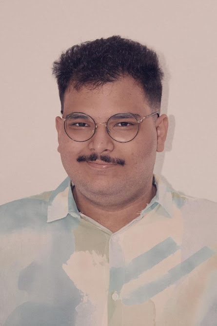

<!DOCTYPE html>
<html lang="pt-br"></html>
<head>
    <meta charset="UTF-8">
    <meta http-equiv="X-UA-Compatible" content="IE=edge">
    <meta name="viewport" content="width=device-width, initial-scale=1.0">
    <link rel="stylesheet" href="style.css">
    <title>João Laia</title>
</head>
<style></style>
<body>
    <div class="titulo">
        <h1>João Carlos Laia de Freitas</h1>
    </div>
    
    <div class="descricao">
        
        
        <div class="descricao-texto">
            <p id="intro"><em>Hábil comunicador que está se descobrindo no mundo tech </em></p>

            <p> 
            Antes profissional da comunicação e do marketing digital, hoje sou um tryber em busca da transição de carreira. Aos <strong> 22 anos</strong>, nascido em <strong>Betim, Minas Gerais</strong>, busco aliar meus conhecimentos antecedentes ao meu futuro como desenvolvedor. Além da atuação na comunicação, tenho muito interesse nos estudos da História e realizei pesquisas na área dos Estudos de Gênero.
            <br><br>
             Estar na Trybe me mostra que minha afinidade com as Ciências Socials <strong>não limita</strong> meu potencial na área tech e estou empolgado para continuar progredindo cada vez mais na área.
        </div>
    </div>

    <div class="habilidades">
<h2>Principais habilidades</h2>
<ul id="habilidades">
    <li>HTML</li>
    <li>CSS</li>
    <li>JavaScript</li>
    <li>Metodologias ágeis</li>
</ul>
</div>
<h4><a href="#minha-foto">Minha foto</a>
<br>
<a id="blog" href="https://medium.com/@jclaia" target="blank">Algumas opiniões autorais</a></h4>
</body>

